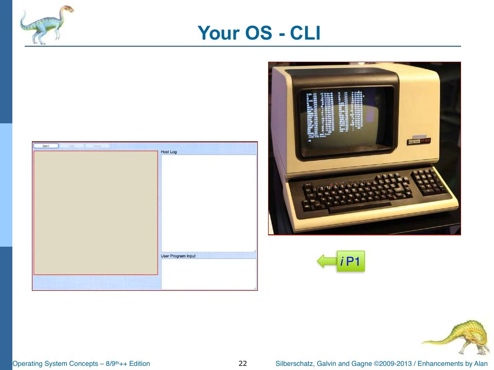

The Host: Clock, Buttons, and the Log
Slides: Chapter 1, pp. 23–37 (organization, startup, interrupts); Chapter 2, pp. 155–163 (boot, virtual machines).
We start at the bottom: the code that pretends to be a computer’s case, power switch, crystal oscillator, and keyboard controller. It lives in two files, host/control.ts and host/devices.ts. Both carry the same header comment, and it’s worth taking literally:
This (and other host/simulation scripts) is the only place that we should see “web” code, such as DOM manipulation and event handling, and so on.
The host is the only layer that knows it’s running in a web page. Everything above it is supposed to believe it’s running on a machine.
Power on: hostInit and the Start button
When the page finishes loading, the <body onload="onDocumentLoad()"> attribute calls a tiny global function from globals.ts, which calls Control.hostInit:
public static hostInit(): void {
// This is called from index.html's onLoad event via the onDocumentLoad function pointer.
// Get a global reference to the canvas. TODO: Should we move this stuff into a Display Device Driver?
_Canvas = <HTMLCanvasElement>document.getElementById("display");
// Get a global reference to the drawing context.
_DrawingContext = _Canvas.getContext("2d");
// Enable the added-in canvas text functions (see canvastext.ts for provenance and details).
CanvasTextFunctions.enable(_DrawingContext); // Text functionality is now built in to the HTML5 canvas. But this is old-school, and fun, so we'll keep it.
// Clear the log text box.
// Use the TypeScript cast to HTMLInputElement
(<HTMLInputElement>document.getElementById("taHostLog")).value = "";
// Set focus on the start button.
// Use the TypeScript cast to HTMLInputElement
(<HTMLInputElement>document.getElementById("btnStartOS")).focus();
// Check for our testing and enrichment core, which
// may be referenced here (from index.html) as function Glados().
if (typeof Glados === "function") {
// function Glados() is here, so instantiate Her into
// the global (and properly capitalized) _GLaDOS variable.
_GLaDOS = new Glados();
_GLaDOS.init();
}
Control.updateCpuPanel();
Control.updateProcessPanel();
Control.updateMemoryPanel();
Control.updateModeIndicator();
}
This is the moment the “machine” is plugged in but not yet switched on. It finds the canvas (the screen), bolts the vector-font routines onto its drawing context, clears the host log, and checks whether a Glados testing function was loaded by index.html. If so, it creates her. Nothing is running yet.
Pressing Start is flipping the power switch:
public static hostBtnStartOS_click(btn): void {
// Disable the (passed-in) start button...
btn.disabled = true;
// .. enable the Halt,reset, pause and step buttons ...
(<HTMLButtonElement>document.getElementById("btnHaltOS")).disabled =
false;
(<HTMLButtonElement>document.getElementById("btnReset")).disabled = false;
(<HTMLButtonElement>document.getElementById("btnStep")).disabled = false;
(<HTMLButtonElement>document.getElementById("btnPause")).disabled = false;
Control.setPaused(false);
// .. set focus on the OS console display ...
document.getElementById("display").focus();
// ... Create and initialize the CPU (because it's part of the hardware) ...
_CPU = new Cpu(); // Note: We could simulate multi-core systems by instantiating more than one instance of the CPU here.
_CPU.init(); // There's more to do, like dealing with scheduling and such, but this would be a start. Pretty cool.
_Memory = new Memory();
_MemoryAccessor = new MemoryAccessor(_Memory);
const segmentSize = Memory.SIZE / 3;
_MemoryManager = new MemoryManager(
_Memory,
_MemoryAccessor,
segmentSize,
3,
);
_MemoryManager.reset();
_PidCounter = 0;
_ProcessTable.clear();
_CurrentProcess = null;
if (_ReadyQueue) {
_ReadyQueue.clear();
}
_SchedulerCounter = _SchedulerQuantum;
_RunAllMode = false;
_CpuCycleCount = 0;
// ... then set the host clock pulse ...
_hardwareClockID = setInterval(
Devices.hostClockPulse,
CPU_CLOCK_INTERVAL,
);
// .. and call the OS Kernel Bootstrap routine.
_Kernel = new Kernel();
_Kernel.krnBootstrap(); // _GLaDOS.afterStartup() will get called in there, if configured.
}
Read it as a hardware power-on sequence:
- Enable the other front-panel buttons.
- Create the CPU and reset its registers. (Alan’s comment: you could create two CPUs here to simulate a multi-core machine. “There’s more to do… but this would be a start. Pretty cool.”)
- Create memory (768 bytes), the memory accessor that guards it, and a memory manager with three 256-byte segments. Strictly speaking the memory manager is OS software, not hardware; rObSen creates it here because it needs references to the memory objects, and the kernel doesn’t exist yet.
- Reset bookkeeping: PID counter, process table, ready queue, quantum counter.
- Start the clock:
setInterval(Devices.hostClockPulse, CPU_CLOCK_INTERVAL)callshostClockPulseevery 100 milliseconds, forever. - Run the bootstrap: create the kernel and call
krnBootstrap()(Chapter 6).
The clock
public static hostClockPulse(): void {
// Increment the hardware (host) clock.
_OSclock++;
// Call the kernel clock pulse event handler.
_Kernel.krnOnCPUClockPulse();
}
That’s the whole clock. Every 100 ms the host increments the global _OSclock and hands control to the kernel’s krnOnCPUClockPulse, which either handles one pending interrupt or lets the CPU execute one instruction (or idles). So rObSen’s CPU runs at a blistering 10 Hz. Ten instructions per second is slow enough to watch, which is the point.
globals.ts warns: "The timer is different from hardware/host clock pulses. Don't confuse these." The clock is the heartbeat that makes the machine step: it is hardware, it never stops, and it doesn't interrupt anybody. The timer is a device that counts down and raises TIMER_IRQ when it reaches zero, so the OS can take the CPU back from a process that has used up its quantum (slide p. 56). In rObSen the timer is the _SchedulerCounter that Cpu.cycle decrements (Chapter 13). Many clock pulses make one timer interrupt.
Notice the design choice hidden here. On a real machine, the CPU runs continuously and the interrupt controller interrupts it. In rObSen, the clock calls the kernel, and the kernel decides whether this tick is spent on an interrupt or on a CPU instruction. Interrupts are handled between instructions, never during one, which is also how real CPUs behave: they check for pending interrupts at instruction boundaries. The project spec requires this: “Only allow context switches after fully completed CPU instruction cycles.”
The keyboard as an interrupt source
public static hostEnableKeyboardInterrupt(): void {
// Listen for key press (keydown, actually) events in the Document
// and call the simulation processor, which will in turn call the
// OS interrupt handler.
document.addEventListener("keydown", Devices.hostOnKeypress, false);
}
public static hostDisableKeyboardInterrupt(): void {
document.removeEventListener("keydown", Devices.hostOnKeypress, false);
}
public static hostOnKeypress(event): void {
// The canvas element CAN receive focus if you give it a tab index, which we have.
// Check that we are processing keystrokes only from the canvas's id (as set in index.html).
if (event.target.id === "display") {
event.preventDefault();
// Note the pressed key code in the params (Mozilla-specific).
var params = new Array(
event.which,
event.shiftKey,
event.ctrlKey || event.metaKey,
);
// Enqueue this interrupt on the kernel interrupt queue so that it gets to the Interrupt handler.
_KernelInterruptQueue.enqueue(new Interrupt(KEYBOARD_IRQ, params));
}
}
hostEnableKeyboardInterrupt subscribes to the browser’s keydown events; hostDisableKeyboardInterrupt unsubscribes. Those are the kernel’s “enable interrupts” and “disable interrupts” for the keyboard (Chapter 6). When a key goes down:
- It’s ignored unless the canvas (
id="display") has focus. Typing into the program-input textarea shouldn’t type into the OS. preventDefault()stops the browser’s own handling (so Backspace doesn’t navigate back and Tab doesn’t move focus).- The key code, Shift state, and Ctrl-or-Command state become the parameters of a new
Interrupt(KEYBOARD_IRQ, params), which goes on the kernel’s interrupt queue.
That’s all the keyboard hardware does: it raises an interrupt with some data attached. It doesn’t decide what the key means. Turning key code 65 into "a" or "A" is the keyboard driver’s job (Chapter 7), and that’s OS software.
event.which is a deprecated property of keyboard events; modern code uses event.key (a string like "a") or event.code (a physical key like "KeyA"). rObSen keeps the numeric codes on purpose: numeric scan codes are what a real keyboard controller delivers, and translating them is exactly the job a driver should have.
The other front-panel buttons
public static hostBtnHaltOS_click(btn): void {
Control.hostLog("Emergency halt", "host");
Control.hostLog("Attempting Kernel shutdown.", "host");
// Call the OS shutdown routine.
_Kernel.krnShutdown();
// Stop the interval that's simulating our clock pulse.
clearInterval(_hardwareClockID);
// TODO: Is there anything else we need to do here?
}
public static hostBtnPause_click(btn): void {
if (!_CPU || !_Kernel) {
return;
}
if (!Control.isPaused) {
Control.setPaused(true);
_CPU.pause();
Control.hostLog("Paused execution", "host");
} else {
if (_CurrentProcess) {
Control.setPaused(false);
_CPU.resume();
Control.hostLog("Resume execution", "host");
} else {
Control.setPaused(true);
Control.hostLog("Resume ignored: no active process.", "host");
}
}
Control.hostUpdateDisplays();
}
public static hostBtnStep_click(btn): void {
if (!_CPU || !_Kernel) {
return;
}
Control.setPaused(true);
if (!_CurrentProcess) {
Control.hostLog("Step ignored: no active process.", "host");
return;
}
_CPU.pause();
_Kernel.krnStep();
}
public static hostBtnReset_click(btn): void {
// The easiest and most thorough way to do this is to reload (not refresh) the document.
(<HTMLButtonElement>document.getElementById("btnReset")).disabled = true;
(<HTMLButtonElement>document.getElementById("btnStep")).disabled = true;
(<HTMLButtonElement>document.getElementById("btnPause")).disabled = true;
location.reload();
}
- Halt is the emergency stop: it asks the kernel to shut down, then kills the clock with
clearInterval. After Halt the machine is dead; nothing ticks. - Pause flips the CPU’s
isExecutingflag off (or back on). The clock keeps ticking, so the kernel still handles keyboard interrupts while the CPU is paused. You can still type. - Step forces pause mode and calls
Kernel.krnStep, which advances_OSclockby hand and does one unit of work: handle one interrupt if any are queued, otherwise execute one CPU instruction. It’s a manual clock pulse. (Project Part Two requires single-step.) - Reset reloads the page. That re-runs everything from
hostInit, wiping memory and the CPU. It does not wipe the disk, becausesessionStoragesurvives a reload (Chapter 15).
The host log and the panels
The host log is the machine’s console printer:
public static hostLog(msg: string, source: string = "?"): void {
// Note the OS CLOCK.
var clock: number = _OSclock;
// Note the REAL clock in milliseconds since January 1, 1970.
var now: number = new Date().getTime();
// Build the log string.
var str: string =
"({ clock:" +
clock +
", source:" +
source +
", msg:" +
msg +
", now:" +
now +
" })" +
"\n";
// Update the log console.
var taLog = <HTMLInputElement>document.getElementById("taHostLog");
taLog.value = str + taLog.value;
// TODO in the future: Optionally update a log database or some streaming service.
}
Each entry looks like ({ clock:42, source:OS, msg:Handling IRQ~1, now:1760000000000 }): the simulated time, who said it, what they said, and the real time in milliseconds since 1970. New entries are prepended so the newest is at the top.
hostUpdateDisplays repaints the CPU registers, the process table, the memory dump, and the disk view. The kernel calls it at the end of every clock pulse, so the panels refresh ten times a second. The memory dump is a neat example of the host formatting raw state for humans:
private static updateMemoryPanel(): void {
const memoryEl = document.getElementById("memory-dump");
if (!memoryEl || !_Memory) {
return;
}
const bytes = _Memory.snapshot();
const rows: string[] = [];
for (let address = 0; address < bytes.length; address += 16) {
const chunk = bytes
.slice(address, address + 16)
.map((value) => Control.hex(value))
.join(" ");
rows.push(`${Control.hex(address, 4)}: ${chunk}`);
}
memoryEl.textContent = rows.join("\n");
}
private static hex(value: number, width: number = 2): string {
const mask = width > 2 ? 0xffff : 0xff;
const normalized = (value ?? 0) & mask;
return normalized.toString(16).toUpperCase().padStart(width, "0");
}
hex(value, width) masks the value to one or two bytes, converts it to base 16, upper-cases it, and left-pads with zeros. (padStart and template literals are covered in Chapter 15a.)
updateDiskPanel also runs on every clock pulse. It reads all 256 disk blocks with readBlock, and each readBlock calls loadImage, which re-parses the entire JSON disk image from sessionStorage. That's 256 full JSON parses, ten times a second, even when nothing on the disk has changed. It's fast enough on a modern laptop not to notice, but it's the kind of thing a real OS avoids with a cache or a dirty flag.What this layer teaches
The host is small, but it establishes three ideas that everything else relies on:
- There is a heartbeat. All progress in the system happens on clock ticks. Nothing in the OS runs “in the background”; it runs because the clock called it.
- Devices raise interrupts; they don’t interpret them. The keyboard hardware says “key 65 went down, Shift was held.” The meaning is the OS’s business.
- The front panel is outside the OS. Halt, Pause, Step, and Reset reach into the machine from outside, the way the physical buttons on a 1970s minicomputer did.

Check yourself
- If you changed
CPU_CLOCK_INTERVALto 10, what would change about the system, and what wouldn’t? - Why does
hostOnKeypresscheckevent.target.id === "display"? What would go wrong without it? - While the CPU is paused, can GLaDOS still type commands? Why?
Answers
- Everything would run ten times faster in real time: the CPU at 100 Hz, interrupts handled sooner. Nothing measured in cycles would change: the quantum is still 6 cycles, turnaround and wait times (measured in CPU cycles) come out identical. The panels would also try to repaint 100 times a second.
- Without it, keystrokes typed into the User Program Input textarea would also be sent to the OS as interrupts, and
preventDefault()would stop them from reaching the textarea, so you couldn’t paste or edit programs. - Yes. Pausing only clears
_CPU.isExecuting. The clock keeps calling the kernel, which keeps draining the interrupt queue. (GLaDOS actually goes even further: she callskrnInterruptHandlerdirectly, bypassing the queue.)